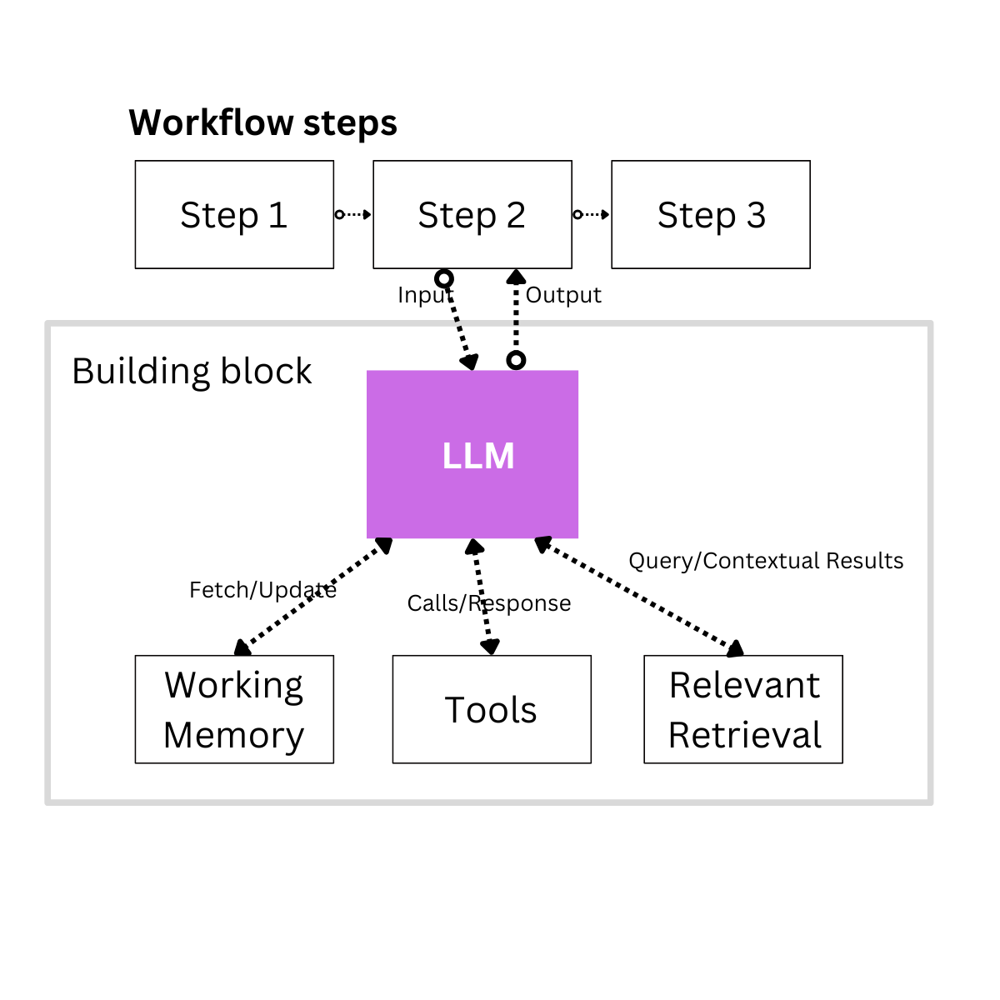
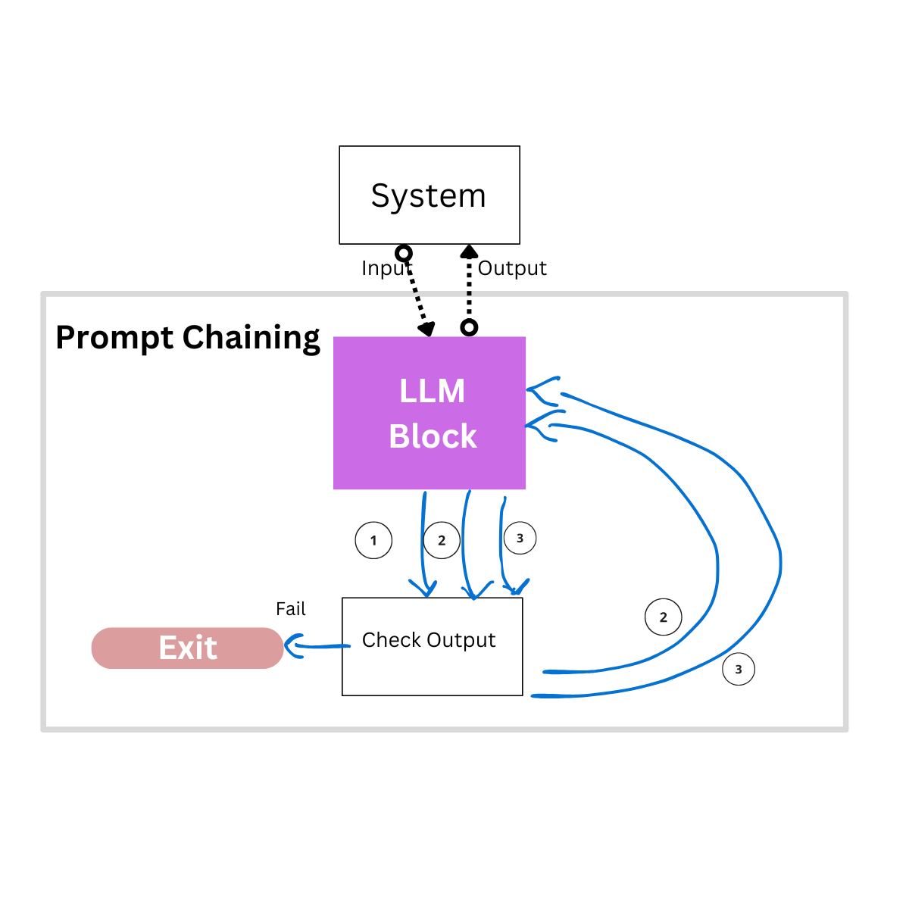
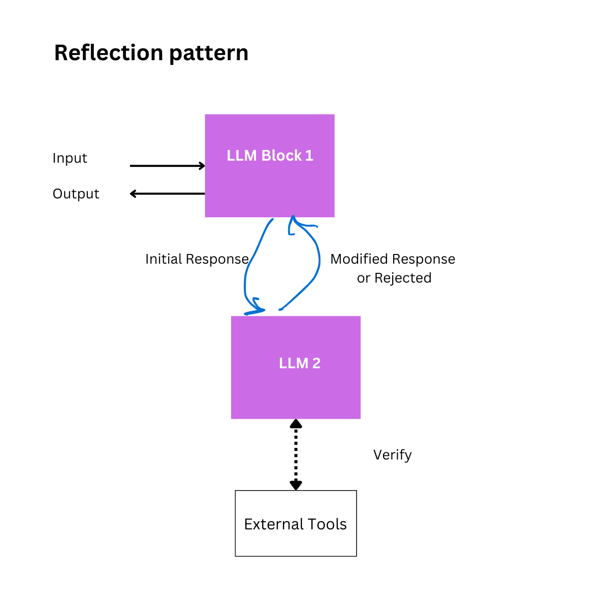
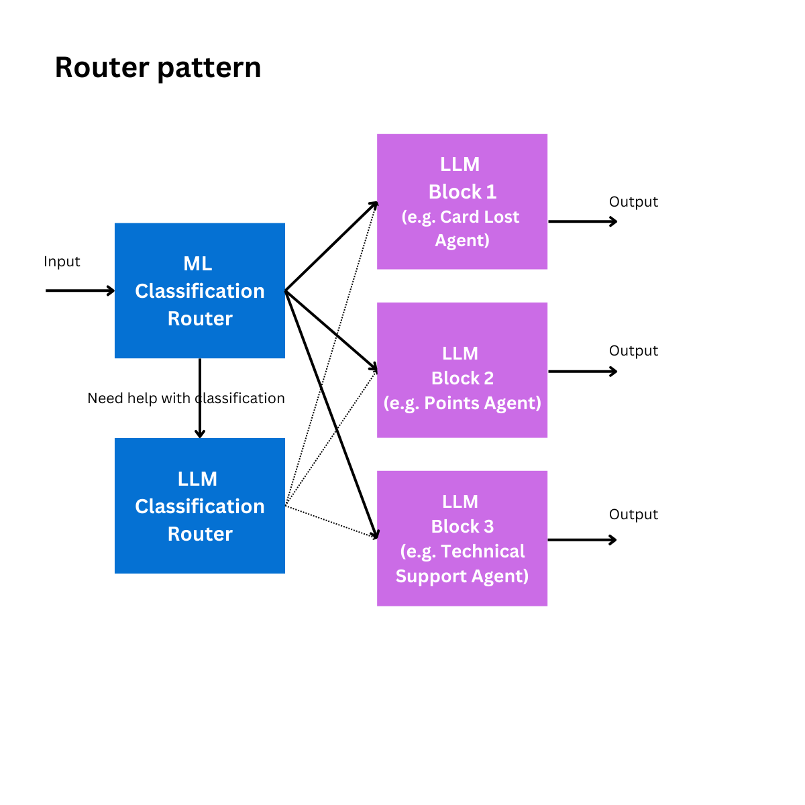
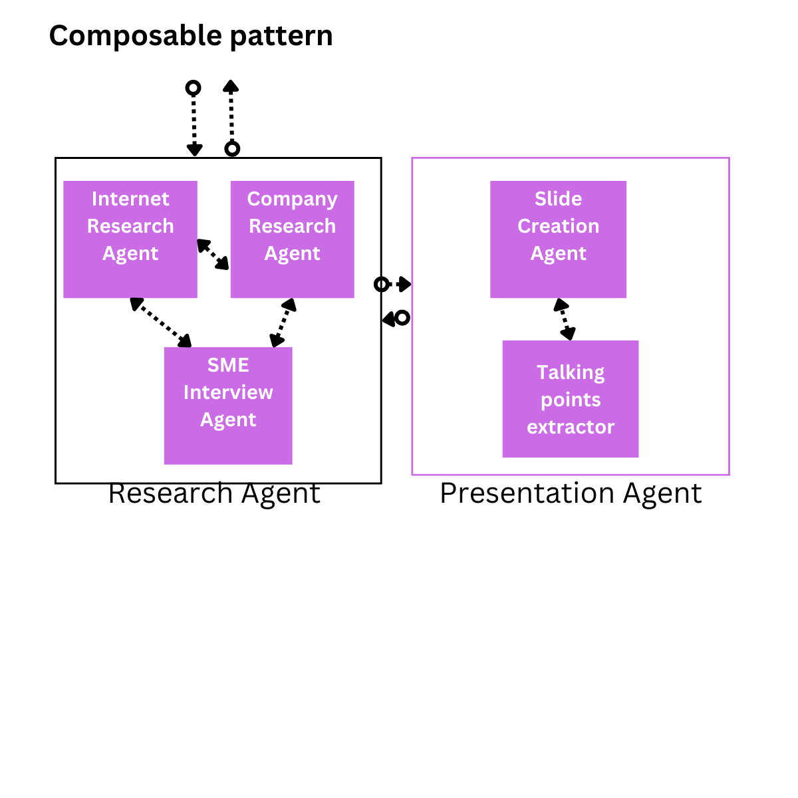
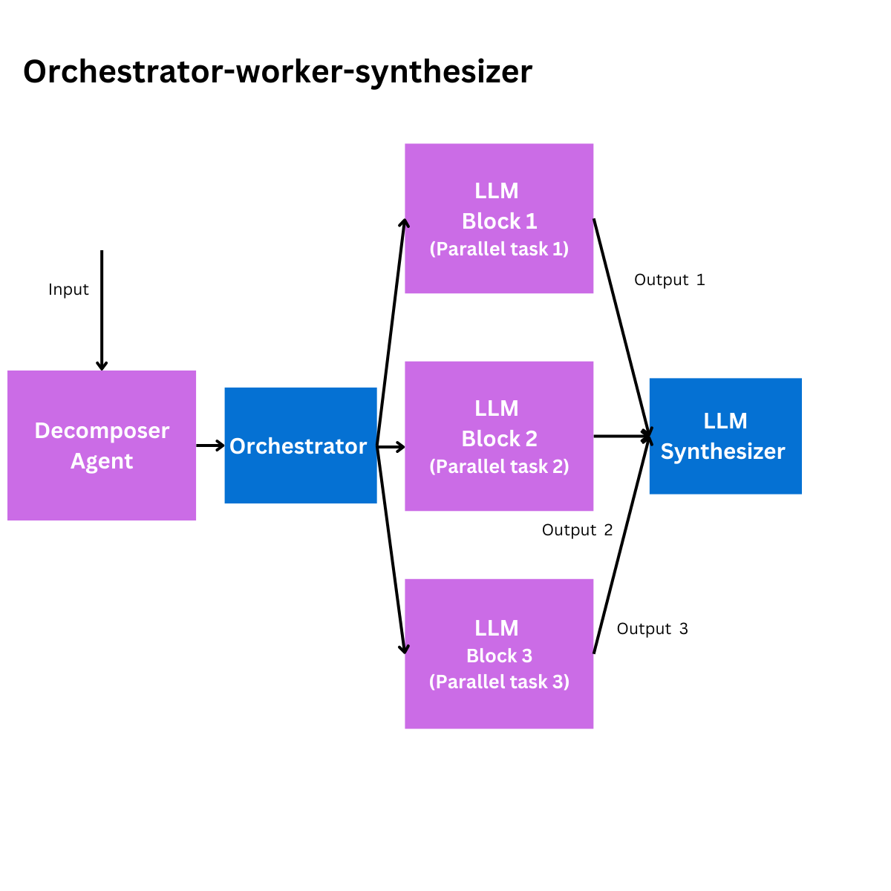

Different Agent Workflow Implementation Patterns
The Building Block for an Agentic System

The basic building block for an Agent is shown above. Some folks might call this a Standalone Agent.
For the sample workflow above, one of the steps (Step 2) interacts with the Agent.
For most workflows, a single standalone agent will do the trick. One of things which is not shown here is that there is either a system or human interaction in one of the workflow steps. If the agent does not know what the next step or conclusion should be, a live human agent can be contacted to retrieve an answer to a specific question.. A pattern used now is to have one of the tools as a Human-In-The-Loop tool at the disposal to an agent.
Other Tools made available to the agent can include an API to research portals like Arxiv, HuggingFace, GALE, Bing search, Serp API, etc.
Working Memory
The working memory for an agent involves the ability to retrieve previous conversations or details shared by the user, as well as previous generations.
This memory allows the agent to keep track of past interaction
Relevant Retrieval
This is fundamentally built on Semantic Search
- Uses embedding models to find contextually similar information
- This goes beyond keyword matching
- Captures meaning and intent
Retrieval Strategies
-
Vector Database Approach
def retrieve_relevant_context(query, vector_db): # Convert query to embedding query_embedding = embed_model.encode(query) # Find top-k most similar documents relevant_docs = vector_db.search( query_embedding, top_k=5, similarity_threshold=0.7 ) return relevant_docs - Hybrid Retrieval
- Combines semantic search with:
- Keyword matching
- Metadata filtering
- Relevance scoring
- Combines semantic search with:
Prompt Chaining pattern with an LLM Block (AI Agent)

I am using the "LLM Block" interchangeably with "Agent" or "Standalone Agent" based on the
Prompt chaining helps create a more accurate agentic system. Prompt chaining decomposes complex requests into smaller, more manageable subtasks by:
- Reducing the cognitive load on the LLM. Yes, Cognitive load is not just for humans!
- Improving accuracy through focused prompts
- Creating a step-by-step reasoning process
Performance Tradeoffs
- Pros: Higher accuracy, more controllable. As you see in the diagram above you can programmatically check the output.
- Cons: Increased latency, more API calls
# Here is pseudocode so that you understand Prompt Chaining
# In the diagram above, I have made one call to the LLM
# But it's decomposed into three calls
# Initial Broad Prompt
initial_prompt = """
Identify emerging consumer electronics trends for 2024.
Focus on innovative products that solve real-world problems.
"""
# Example Input: Trend Identification
trends = llm.generate(initial_prompt)
# Possible Output: "Smart home devices, AI-powered health tech, sustainable electronics"
# Example Call 1 for checking: Check if the output has at least one AI reference
CheckOutput(trends)
# Example LLM Call 2: Detailed Market Analysis
market_analysis_prompt = f"""
Given these emerging trends: {trends}
For each trend, provide:
1. Specific product opportunities
2. Target market demographics
3. Potential technological challenges
"""
market_details = llm.generate(market_analysis_prompt)
# Example Call 2 for checking: Check if the output has at least two tasks
CheckOutput(market_details)
# Detailed breakdown of each trend's market potential
# Example LLM Call 3: Competitive Landscape
competitive_prompt = f"""
Analyze the competitive landscape for these product opportunities:
{market_details}
For each product opportunity, identify:
- Top 3 potential competitors
- Unique value proposition
- Estimated market entry barriers
"""
competitive_analysis = llm.generate(competitive_prompt)Reflection Pattern for AI Agents

The reflection pattern is a meta-cognitive mechanism that enables AI agents to:
- Analyze their decision-making processes
- Evaluate performance and outcomes
- Dynamically adjust strategies and behaviors
Architecture tradeoffs
Key Problems with the Reflection Pattern:
- Computational Overhead
- High processing complexity
- Significant memory consumption
- Performance degradation in real-time systems
- Uncertainty Management Challenges
- Difficulty quantifying meta-cognitive uncertainty
- Risk of introducing systemic biases
- Potential for over-optimization
Example use case
In a medical care situation, this can be used in the diagnostic reasoning processes, identifying potential medical decision biases or improving treatment recommendation accuracy
Derived Pattern
A more complex pattern is based on the reflection pattern called the Reflexion pattern. Reflexion builds on Basic Reflection, incorporating principles of reinforcement learning. As described in the paper Reflexion: Language Agents with Verbal Reinforcement Learning (https://arxiv.org/pdf/2303.11366), this approach goes beyond simple feedback. It evaluates the response using external data and forces the model to address any redundancies or omissions, making the reflective process more robust and the output more refined.
Router pattern for AI agents

A router pattern dynamically selects the most appropriate next action or processing pathway based on input analysis. An efficient way of doing this is to use an ML Classification router upfront because you could design a user experience where the question is pretty targeted like:
"What can I help you with? e.g. Lost Card, Points, Technical Support, Other".
If the router needs more help with classification, the router can forward that to an LLM router which helps with classification and does ongoing routing.
The Routing pattern works well for complex tasks where distinct categories are better handled with different AI Agents, and where classification can be handled accurately.
Composable pattern for AI agents

Knowing how developers code, agents can quickly become monolithic systems. 😄
At its core, composable pattern refers to the ability to create AI systems by connecting smaller, independent “agents.” Each of these agents can handle specific tasks, and they can be combined like building blocks to form more complex AI applications. The pattern is extensible modularly - ie. If I need a specific agent who does a particular type of research I can add that to the Research Agent group above without disrupting the end-user experience.
The multi-agent conversation pattern is used within each box described above. But from a user's perspective, the user interacts with the one agent who behaves as the conversation orchestrator.
Orchestrator Worker Synthesizer pattern for AI agents

The Orchestrator-Worker-Synthesizer (OWS) pattern offers a pattern for building adaptable and robust AI agents.
In this pattern, a Decomposer breaks down the high-level goals into tasks and the Orchestrator coordinates the actions of various Workers. These Workers, each responsible for a specific task, work independently and concurrently.
A Synthesizer then combines the outputs of these Workers, resolving potential conflicts and producing a unified behavior for the agent.
The advantage is that this pattern can work on highly variable tasks. The number of LLM Blocks can be variable. The calls can also be made to new instances of the same LLM Block.
By decoupling the overall goal into smaller, more manageable sub-goals, the agent can flexibly adapt to changing circumstances and unexpected challenges.
Example use case
A robotic assistant might have Workers for navigation, object manipulation, and human-robot interaction. The Orchestrator can dynamically activate and deactivate these Executors based on the current situation and the user's needs.